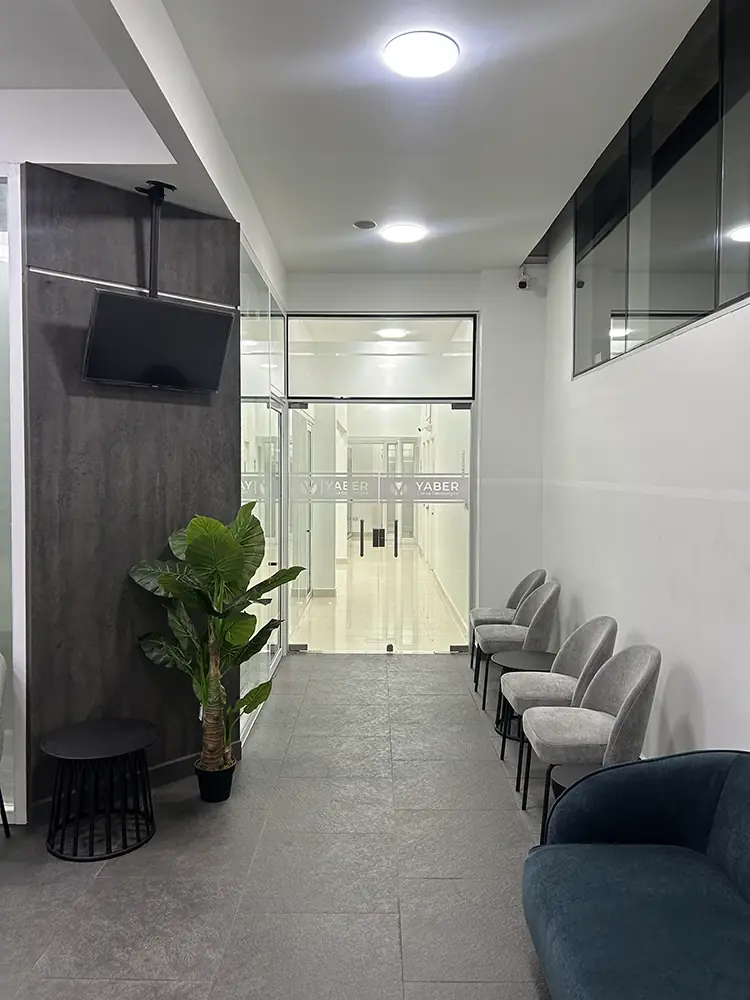

Inicio/Contacto
Contacto
Cómo llegar a Clínica Yaber
Dirección
Gran Avenida José Miguel Carrera 4311, local 206, 2.º piso (Strip Center Paseo Vial), San Miguel.
Metro
Lo Vial o San Miguel, línea 2.
Estacionamiento
Gratis en los niveles -2 y -3 del Paseo Vial.
Horario
| Lunes a jueves | 9:30 a 19:45 |
| Viernes | 10:30 a 18:30 |
| Sábado | 9:30 a 18:30 |
| Domingo | Cerrado |
WhatsApp, teléfono y correo

Dudas
Preguntas frecuentes
¿Dónde estaciono?
En el mismo Strip Center Paseo Vial: el estacionamiento es gratis en los niveles -2 y -3.
¿Atienden los feriados?
Sí, se atiende normal los feriados, salvo los irrenunciables: 1 de enero, 1 de mayo, 18 y 19 de septiembre y 25 de diciembre.
¿Qué metro me queda más cerca?
Las estaciones Lo Vial y San Miguel, de la línea 2, a pasos del Paseo Vial.
Reserve su hora
Le mostramos las horas disponibles al momento.
Escríbanos por WhatsApp y le ofrecemos horas reales de la agenda, o reserve usted mismo la evaluación en línea.